Figure 1: XKCD: Data Trap. It's important to make sure your analysis destroys as much information as it produces. https://xkcd.com/2582/, CC BY-NC 2.5 https://creativecommons.org/licenses/by-nc/2.5/.
Once we have some data, the next step is often to summarize it. In fact, we’ve already done that in some ways. Some statistics like the mean may be considered a summary of the data. This may be useful because we prefer large datasets (remember good sampling!), but making sense of a list of numbers can be really hard! Summaries help us describe, and eventually compare, datasets, which we are using to infer something about a population.
Think about it this way. We want to know if several species of iris (Iris versicolor, setosa and virginica) have similarly-shaped flowers. Since we can’t measure every flower on every plant from these species, we sample several sites and come up with the following data (using R’s built-in iris dataset, a dataset we will often use).
Overwhelming, isn’t it? And this isn’t a huge dataset! There are only 150 rows, yet some datasets have tens of thousands! It’s really hard (or impossible) to just look at these numbers and infer anything about the population. Summary statistics help us get a better mental image of the distribution of the sample data.
Aside: While summaries can help make sense of data, and eventually we’ll add p-values to think about things like significance, in best case scenarios we don’t need this! We are going to focus on graphing (visual summaries) and numerical summaries in this section, but sometimes the data speaks for itself (or through an easy graph like this one!).
Figure 2: XKCD: Statistics. Note this not real data (its a comic strip). https://xkcd.com/2400/, CC BY-NC 2.5 https://creativecommons.org/licenses/by-nc/2.5/.
Don’t let complicated approaches confuse you! If your findings disagree with your (mental or actual) visualization of the data, something is likely wrong!
Types of data
We can summarize data using visual (i.e., graphs) or numerical (e.g., summary statistics like the mean) approaches. The specific way we summarize the data also depends on the type of data. Note, the trait we are collecting data on may also be called a variable (since it varies across the population and thus sample).
Let’s just look at the first few rows of the iris dataset.
What’s the data showing? Click on the grey triangle
We’ll use many datasets in class to illustrate points. I don’t expect you to become an expert on any of them, but I will provide some background along the way. For example, this isn’t a botany class, but in case you are interested, here’s some flower morphology.
Figure 3: Flower morphology. Pearson Scott Foresman, Public domain, via Wikimedia Commons
This dataset includes a few different types of variables.
Categorical variables
Variables can be categorical (e.g., eye color, or species in the iris dataset). If categorical variables have no clear hierarchical relationship (again, like eye color and species- one isn’t better than the other), then they are nominal variables. If the categories imply a rank or order (e.g., freshmen, sophomore, junior, senior; egg, larvae, pupae, adult) then they are ordinal variables).
Numeric variables
If data values are based on numbers instead of categories, they are numeric variables. These can be divided into those are count-based (no fractions) - we call these discrete data- and those that can take on any values in a given range - like height or sepal length in the iris dataset- we call these continuous variables.
Graphical summaries
Visual interpretations or displays of your data are an excellent way to make patterns, trends, and distributions easier to see (like the comic above shows). In this section we’ll go over a number of graphs. Consider this is a resource. I don’t expect you to know how to make each of these on your own immediately. We will actually introduce the software we are using to make these in later sections. Instead, you can return here later when you are actually making a graph for ideas (and code!). For your first read, focus on the images (not the code!)
While the type of graph you should use will depend on the data (and you may have several options!) all graphs should have
A descriptive title
Move beyond Y vs. X. State any patterns you see in the title to help the viewer know what they are looking for! Honest interpretation of data is always paramount, but in producing a graph you will already be making visualization decisions.
Labeled axes (measure and unit)
What did you measure, and using what (e.g. Sepal length (cm)).
Data points
You have to actually graph something!
Other parts should only be included when needed, like
A legend
Only needed for graphs with multiple datasets where color, shape, or some other visual cue indicates something to the viewer that would be unclear without added information.
Trendlines
Can be used to show the general/overall relationship between variables. If you use these, make sure to use the right ones! Don’t fit a straight line to a curved relationship!
Single variable
Numerical data
Histograms
Occasionally you only want to show the distribution for a single numerical variable (or how the data themselves are distributed). For example, we could want to display sepal lengths for all the Iris virginica we sampled. We could do this using a histogram.
label_size <-2title_size <-2.5hist(iris[iris$Species =="virginica", "Sepal.Length"], main =expression(paste("Sepal lengths of ",italic("I. virginica"))), xlab ="Sepal Length (cm)", cex.lab=label_size, cex.axis=label_size, cex.main=title_size, cex.sub=label_size, col ="blue")
Figure 4: Example of approximately normal data
The above plot is produced using functions available in all R installs. Many plots now use ggplot2, a package you have to install (don’t worry, we’ll get there!). However, since you may come back to this later, I’ll also show how this graph using ggplot2, and we’ll use that approach for most of the other graphs in this course.
Histograms put the data in bins (usually automatically set by software, but you can update!) and then show the number of samples that fall into each bin. This allows a quick estimate (look at the y, or vertical, axis) of how many samples were taken. The above images also allows us to begin to consider the bounds/range of the data (~4.5-8 cm), which gives information on the minimum and maximum values. We can also see lengths around 6-7 cm are most common.
Why do these graphs look slightly different? (Click the grey triangle to see the answer)
Most programs, including R, have autobreak functions that separate the data into bins for histograms. Notice ggplot2 uses a different algorithm to bin the data. That also impacts what you see! Users, however, can override these, so it’s worth noting that differences in bin size can influence what distributions look like.
hist(iris[iris$Species =="virginica", "Sepal.Length"], main =expression(paste("Sepal lengths of ",italic("I. virginica"))), xlab ="Sepal Length (cm)", cex.lab=label_size, cex.axis=label_size, cex.main=title_size, cex.sub=label_size, col ="blue") hist(iris[iris$Species =="virginica", "Sepal.Length"], breaks=3, main ="Sepal length histogram, 3 breaks", xlab ="Sepal Length (cm)", cex.lab=label_size, cex.axis=label_size, cex.main=title_size, cex.sub=label_size, col ="blue") hist(iris[iris$Species =="virginica", "Sepal.Length"], breaks=10, main ="Sepal length histogram, 10 breaks", xlab ="Sepal Length (cm)", cex.lab=label_size, cex.axis=label_size, cex.main=title_size, cex.sub=label_size, col ="blue")
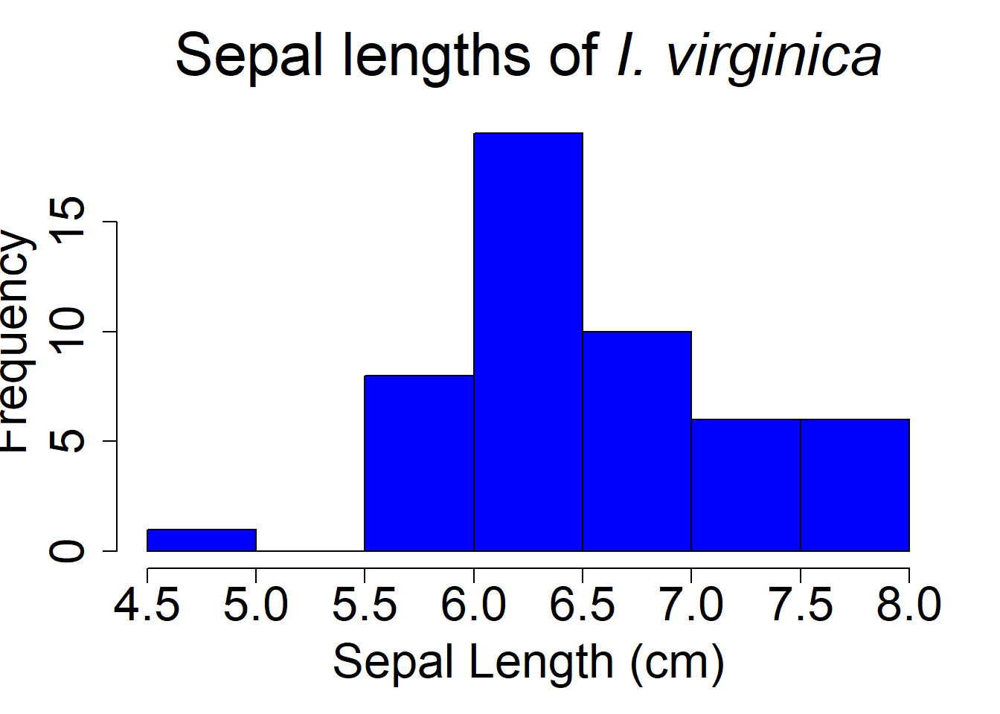
(a) Auto breaks with ggplot2
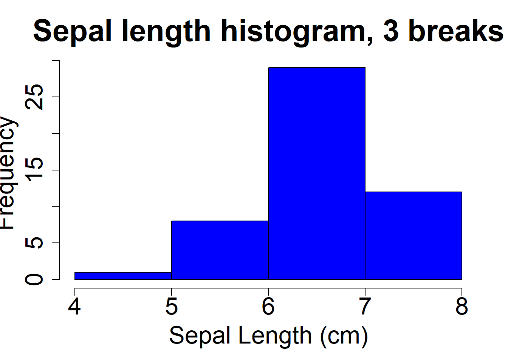
(b) 3 breaks
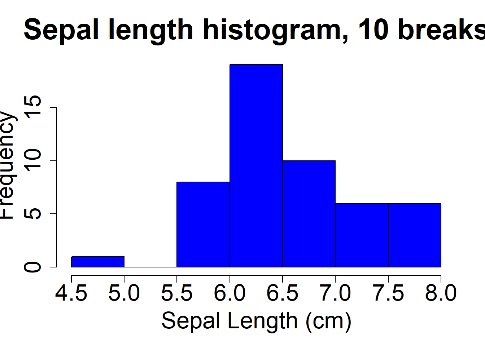
(c) 10 breaks
Figure 6: The number of bins changes how histograms look .
Figure 7: The number of bins changes how histograms look (now in ggplot2).
A similar issue exists for qualitative data in regards to the categories that are combined/used.
This distribution of this data is (very) approximately normal. We will define normality more later (equations!), but for now note the distribution is roughly symmetric, with tails on either side. Values near the middle of the range are more common, with the chance of getting smaller or larger values declining at an increasing rate…
Comparing the above graph to other distributions may be an easier approach to understanding normality. Consider these graphs.
set.seed(19)parrots<-round(c(rnorm(1000,400,10)),3)ggplot(data.frame(parrots), aes(x=parrots)) +geom_histogram( fill="green", color="black") +labs(title="Weight of Westchester parrots",x="Weight (g)",y="Frequency")
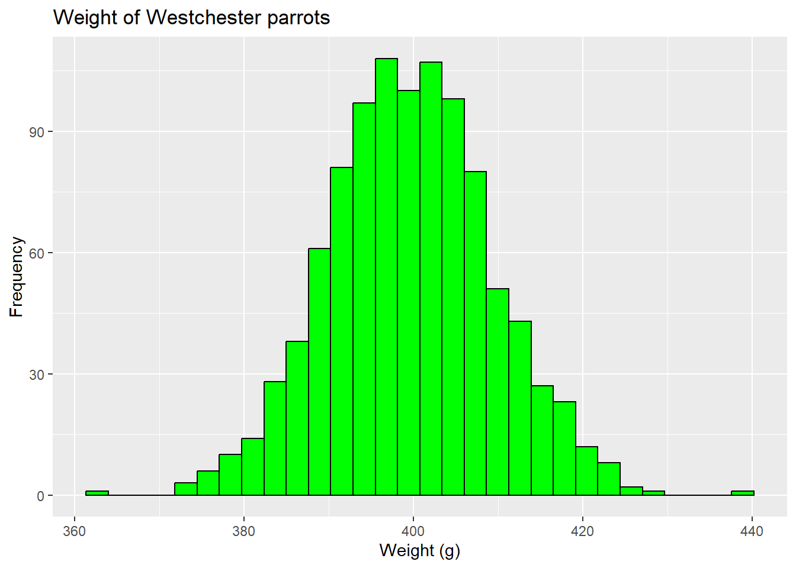
Figure 9: Example of normal data
set.seed(19)blue_jays <-round(rbeta(10000,2,8)*100+runif(10000,60,80),3)ggplot(data.frame(blue_jays), aes(x=blue_jays)) +geom_histogram( fill="blue", color="black") +labs(title="Weight of Westchester blue jays",x="Weight (g)",y="Frequency")
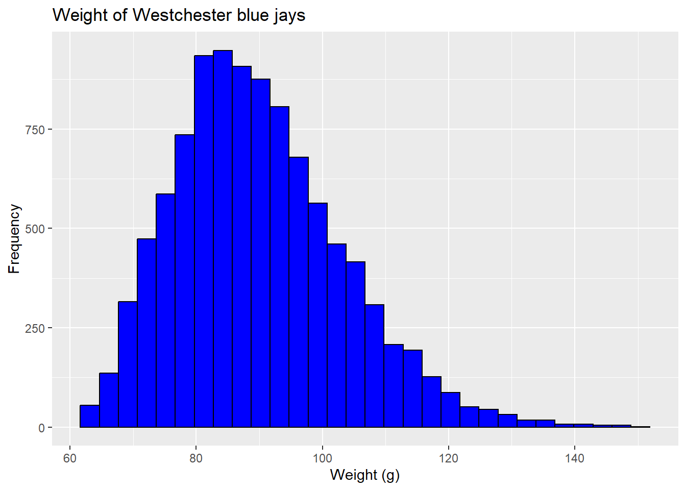
Figure 10: Example of right-skewed data
The cardinal (Figure 8) data has a longer left tail and is not symmetric. We call this left- or negatively-skewed data (since it’s going lower on the x-axis). Compare that to the blue jay (Figure 10) data; it has a longer right-tail and is positively- or right-skewed. Again, note this is all relative to symmetric data like you see with the parrots (Figure 9), which is normally-distributed data.
All symmetric data is not normal, however. Look at the data on robin and woodpecker weights.
`stat_bin()` using `bins = 30`. Pick better value with `binwidth`.
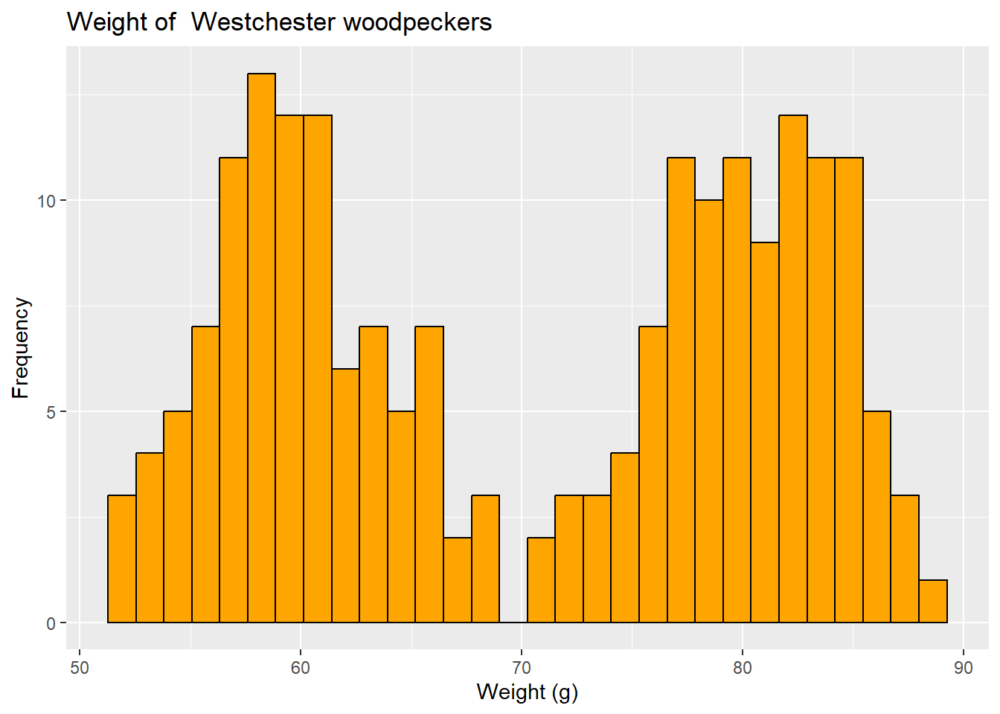
Figure 12: Example of bimodal data
Both these are roughly symmetric but clearly different from normally-distributed data (we will return to the woodpecker data!). The robin data (@fig-robins) is what we call uniformly distributed. There are really no tails, as it appears you are just as likely to see any number within the bounds as any other. Kurtosis is the statistical term for what proportion of the data points are in the tails. High kurtosis distributions have heavy tails with multiple outliers. The uniform distribution is an example of a low kurtosis distribution (it has no tails!).
This figure may also help.
Figure 13: English: Plot of several symmetric unimodal probability densities with unit variance. From highest to lowest peak: red, kurtosis 3, Laplace (D)ouble exponential distribution; orange, kurtosis 2, hyperbolic (S)ecant distribution; green, kurtosis 1.2, (L)ogistic distribution; black, kurtosis 0, (N)ormal distribution; cyan, kurtosis −0.593762…, raised (C)osine distribution; blue, kurtosis −1, (W)igner semicircle distribution; magenta, kurtosis −1.2, (U)niform distribution. Public domain.
If we consider the normal distribution (shown in black) to have 0 kurtosis, the uniform (pink) has less, and the double-exponential (red) has more Figure 13.
Finally, the woodpecker data (Figure 12) is what we call bimodal. It is symmetric in this case (not always true!), but it has a two clear peaks instead of a single central or skewed high point in the distribution.
These distributions helps us think about what we would expect to find in future samples (remember, we are assuming we have good samples!). To think about future sampling, we can change our y-axis from what we saw (frequency) to a probability density.
Warning: The dot-dot notation (`..density..`) was deprecated in ggplot2 3.4.0.
ℹ Please use `after_stat(density)` instead.
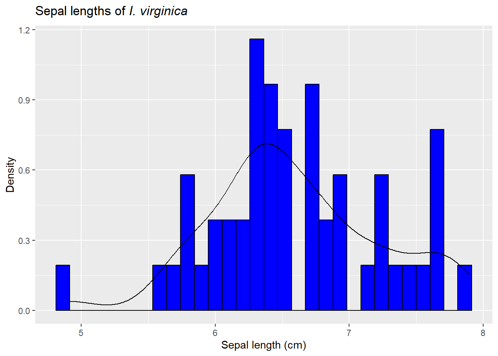
Figure 14: Probability density distribution
These probability density distributions can be calculated directly from data (as seen above), but we can also generate these shapes using equations and values from the data. The benefits of using a distribution derived from an equation is that it is consistent and easy to describe (standardized). This is why many common tests we will learn rely upon the data (or some derivative of it) following a known distribution. For example, many parametric tests will rely upon the data (or means of the data, or errors…we’ll get there) following a normal distribution. We can see our parrot data (which came from a normal distribution!) is very close to a “perfect” normal distribution as defined by an equation.
parrots_df <-data.frame(parrots)colors <-c("PDF from data"="black", "normal curve"="red")ggplot(parrots_df, aes(x=parrots)) +geom_histogram(aes(y = ..density..),fill="green", color="black") +geom_density(aes(color="PDF from data"))+labs(title="Weight of Westchester parrots",x="Weight (g)",y="Density",color="Source")+stat_function(fun = dnorm, args =list(mean =mean(parrots_df$parrots), sd =sd(parrots_df$parrots)), aes(color="normal curve"))+scale_color_manual(values = colors)
`stat_bin()` using `bins = 30`. Pick better value with `binwidth`.
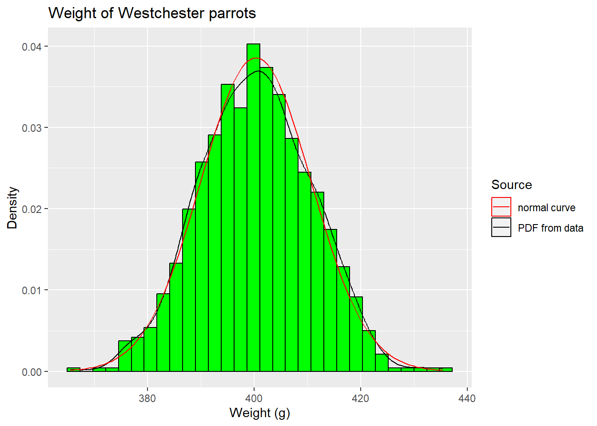
Figure 15: Comparing the distribution of the data to a perfect normal distribution
Bonus question: Why isn’t it perfect? (Click the grey triangle to see the answer!)
This is an easy example of sampling error!
Box plots (aka, box and whisker plots)
Another way to visualize the distribution of numerical data for a single group is using box-and-whisker plots.
These plots show the values of the quartiles of the data. In this way they start combining numerical summaries (more to come!) and visual summaries. More to come, but for now imagine you had a 99 data points. If you arrange the data points from smallest to largest, the median of the data would be the middle (50th data point). If you took the bottom half of the data (first data to median), the first quartile would be the middle point (or, in this case, the average of the 25th and 26th data points). Similarly, the third quartile is the middle of the top half of the data set (or, if not one number, average of 75th and 76th data point). Note the median is also the 2nd quartile of the data!
The box in the box-and-whisker plot shows the first, second, and third quartiles, also known as the inter-quartile range (IQR). The whiskers extend to the minimum and maximum values of the dataset or, up to values within a set range. In ggplot, whiskers by default can only be as long as 150% of the IQR. This means extreme outliers are shown as individual dots. Typically, the most extreme values (minimum and maximum) plus the first, second, and third quartiles are together called the five number summary.
“Easy” examples of five number summaries
Assume we have data that goes from 1 to 99. The five number summary should be
x <-seq(1:1:99) summary(x)
Min. 1st Qu. Median Mean 3rd Qu. Max.
1.0 25.5 50.0 50.0 74.5 99.0
Note the 1st and 3rd quartiles are averaged!
Similarly, consider the numbers 1-5
x <-seq(1:1:5) summary(x)
Min. 1st Qu. Median Mean 3rd Qu. Max.
1 2 3 3 4 5
Categorical data
For categorical data, a bar chart fills a very similar role. Note, however, we don’t bin the data., and there is inherent order for some examples (nominal data). For example, we could examine the colors of our I. virginica. To do this, we’ll need to add some data to our iris data (notice this produces no output…)…
Figure 20: Let colors match traits if possible, but note everyone can’t see colors and sometimes they are not printed.
**Barchart issues**
Note all of the bar graphs above share a similar problem. People tend to like bars, but they are actually just using a lot of ink! We could get the same information about sepal lengths focusing on just the “top” of the bar:
ggplot(iris[iris$Species =="virginica",],aes(x=Sepal.Length)) +geom_freqpoly(color="blue") +labs(title=expression(paste("Sepal lengths of ",italic("I. virginica"))),x="Sepal length (cm)",y="Frequency")
`stat_bin()` using `bins = 30`. Pick better value with `binwidth`.
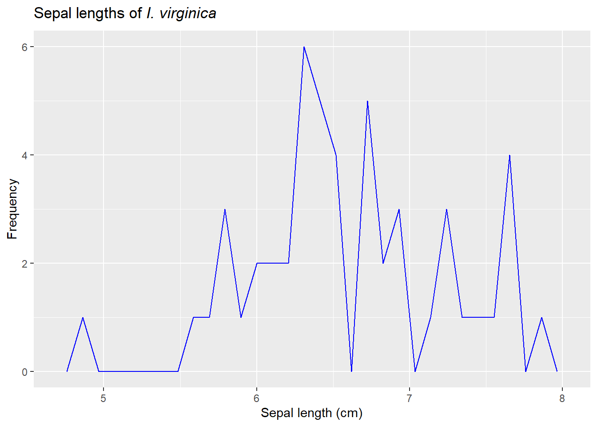
Figure 21: Note you only really know the tops of the bar!
Figure 22: Displaying the data may be the easiest option for small-ish datasets.
Multiple variables
Often we collect multiple pieces of information instead of just one. This can occur for multiple reasons. We may want to consider differences in some variable/trait among groups. This means we have either numerical or categorical data from various groups, but note that groups themselves are now a piece of data! We can think of these analyses as impact of group (a category) on traits (numerical or categorical). We will eventually call these a t-test or ANOVA (when the trait we measure is categorical) ota \(\chi^2\) test (when the trait is categorical). Either way, this is a case where we are collecting a single piece of data from multiple groups. Alternatively, we may collect data on multiple traits from a single group to see how they impact each other. We will eventually analyze this type of data using regression or correlation. Regardless of type, we can also graph this data.
Numerical variables from multiple groups
When we gather numerical data from various groups and wish to compare, we can extend our use bar charts and box-whisker plots by using shapes, colors, or other features to symbolize the groups. For example, we can illustrate the mean (coming up in numerical summaries) or other summary statistics using bar plots..
ggplot(iris, aes(y=Sepal.Length, x=Species, fill=Species)) +geom_bar(stat ="summary", fun ="mean") +labs(title=expression(paste("Sepal lengths of ",italic("I. species"))),y="Sepal length (cm)",x="Species")
We also need to ensure the different groups are visible when distributions overlap. Sometimes stacked histograms (and similar graphs) make it hard to actually visualize each individual group. One option is to instead facet these graphs. Faceting means we produce different graphs for each group, treatment, etc, but they (typically) share axes. This makes it easier to compare the groups.
Figure 23: Cumulative frequency distributions can be useful in noting exactly where distributions diverge
Categorical data from multiple groups
For our example, let’s return to our focus on the color of flowers for various species of iris. One option for this is to consider bar plots. These can be stacked…
Figure 24: Bar plots are stacked by default and count the number of rows found in each category
or not…
ggplot(iris,aes(x=Species)) +geom_bar(aes(fill=Color), position =position_dodge(width=0.5))+labs(title=expression(paste("Color of ",italic("I. virginica "), "flowers")),x="Species",y="Frequency")+scale_fill_manual("legend", values =c("blue"="blue", "orange"="orange", "purple"="purple"))+guides(fill ="none")
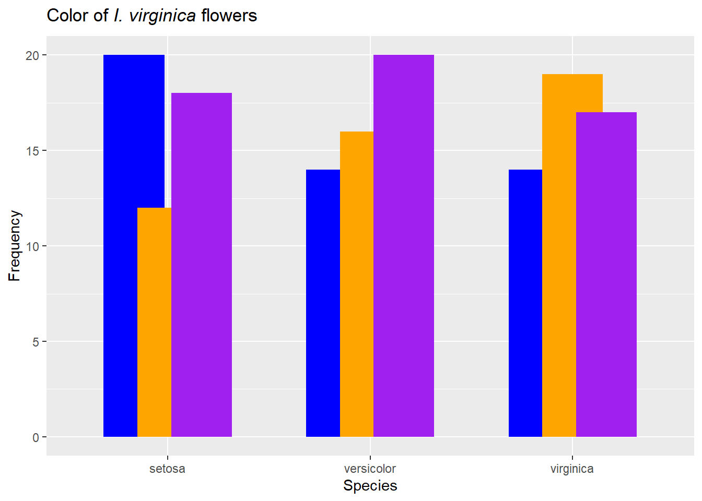
Figure 25: Bar plots can also be grouped by adding the position_dodge argument
Other options include divergent plots, but those are best for 2 groups of data. They also require the data to be summarized and somewhat transformed. For example, we could have blue or not blue flowers.
Figure 28: Note we get the same results by simply adding the argument coord_flip
geom_bar vs geom_col
geom_bar and geom_col are very similar commands, but geom_bar assumes its needs to do something to the data (like count it) by default, whereas geom_col assumes the data are summarized/ready to plot as is. The extra argument stat=identity above can usually make geom_bar behave like geom_col.
In the above cases, each group was measured the same number of times. However, if this isn’t true, visualizations may confound sampling size with summaries. In those cases, focusing on proportion (explained below!) of outcomes may be more useful (and will give you the exact same visualization if all groups were measured the same number of times!). This is sometimes called a mosaic plot; another way to make them (not shown here) is using the package ggmosaic.
ggplot(iris,aes(x=Species)) +geom_bar(aes(fill=Color), position ="fill")+labs(title=expression(paste("Color of ",italic("I. virginica "), "flowers")),x="Species",y="Proportion")+scale_fill_manual("legend", values =c("blue"="blue", "orange"="orange", "purple"="purple"))+guides(fill ="none")
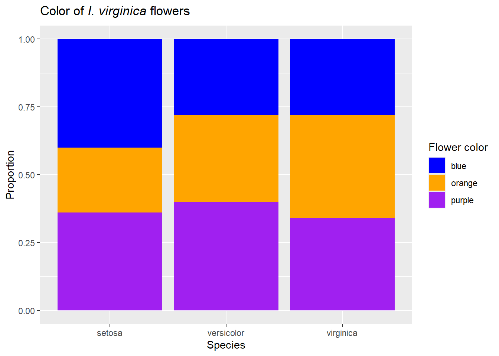
Figure 29: For proportion-based visualizations, stacked bar plots may be easier to read than grouped. We just add the position=fill argument to make these.
Note we could also facet this data if we had other variables. For example, assume sampled another set of populations to the west..
Finally, we can end this section noting a pie chart is just a transformed bar chart.
iris_both$Share <-""ggplot(iris_both,aes(x=Share)) +geom_bar(aes(fill=Color), position="fill")+labs(title=expression(paste("Distribution of flower colors differ among populations of ",italic("I. species "))),y="", x="")+scale_fill_manual("Flower color", values =c("blue"="blue", "orange"="orange", "purple"="purple", "pink"="pink", "yellow"="yellow"))+facet_grid(Population~Species) +coord_polar(theta="y")
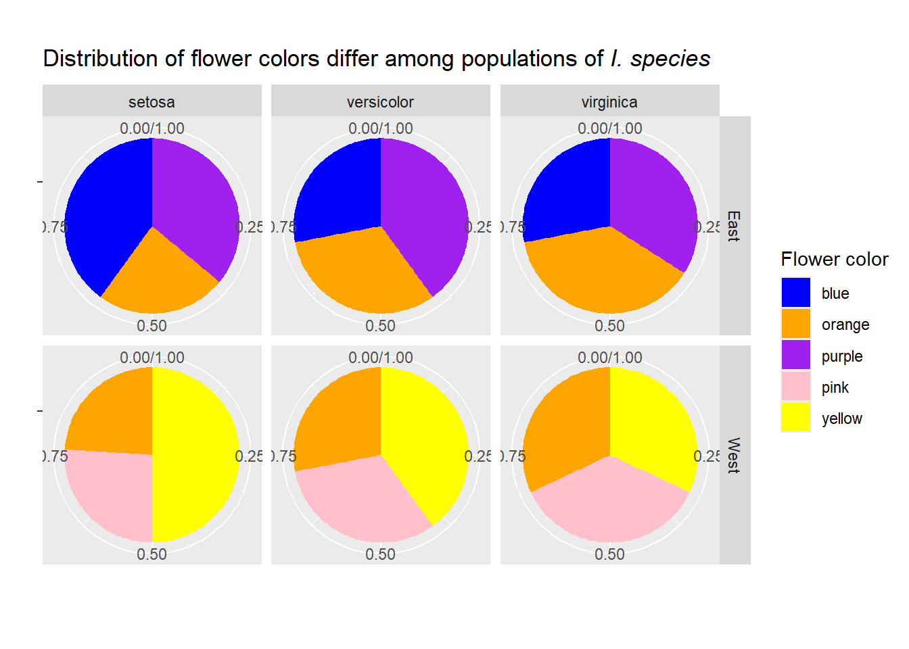
Figure 32: We can add facets and proportions.
Relationships among data from a single group
Instead of collecting data on a single trait from multiple groups, we may collect data on multiple traits from a single group. For example, we could want to see if petal length is related to sepal width in I.virginica. This relationship could be visually summarized using a scatter plot.
ggplot(iris[iris$Species =="virginica",],aes(x=Sepal.Length, y=Petal.Length)) +geom_point() +labs(title=expression(paste("Larger sepals means larger petals in ",italic("I. virginica"))),x="Sepal length (cm)",y="Petal Length (cm)")
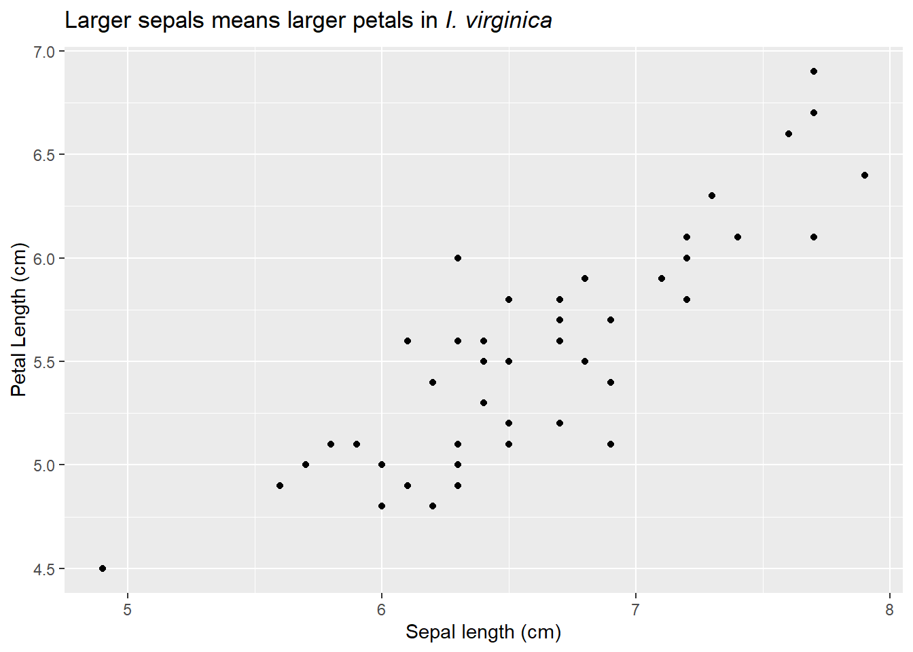
Figure 33: Scatter plots show relationships among numerical variables.
Obviously we can (and will) combine many of the above approaches. For example, we may want to see if relationships among two numerical variables differ among groups (an ANCOVA!).
ggplot(iris,aes(x=Sepal.Length, y=Petal.Length, color=Species)) +geom_point() +labs(title=expression(paste("Larger sepals means larger petals in ",italic("I. virginica"))),x="Sepal length (cm)",y="Petal Length (cm)")
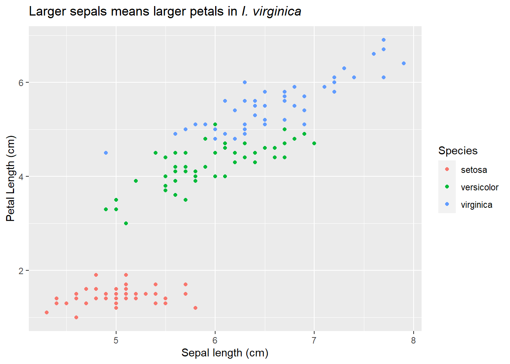
Figure 34: We can add facets and proportions
We’ll get to these later in class, but I just want to note their existence here. Finally, if you are reading this for the first time, don’t worry about the tests (just like the code!). We will explain how all these tests are related when we get there!
Finally, note data of this type may include time or dates. We’ll use a different dataset to illustrate this.
airquality$Date <-as.Date(paste(airquality$Month, airquality$Day,"1973", sep="/"), format ="%m/%d/%Y")ggplot(airquality, aes(x=Date,y =Temp)) +geom_point(col ="orange") +labs(title="Temperature over time", x="Date",y=expression("Temperature " ( degree*F)))
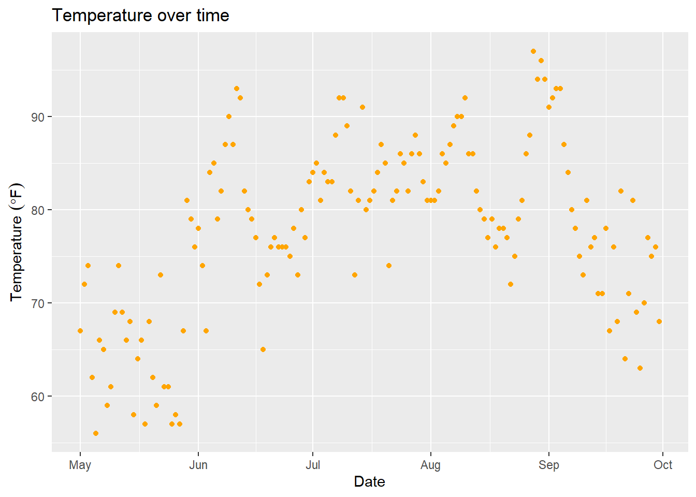
Figure 35: Scatter plots can also include temporal data
ggplot(airquality, aes(x =Date,y =Temp)) +geom_point(aes(col ="Temp")) +geom_line(col="orange") +geom_point(aes(y=Wind+50, col ="Wind speed")) +scale_y_continuous(sec.axis =sec_axis(~.-50, name ="Wind (mph)")) +geom_line(aes(y=Wind+50))+labs(title="Environmental measurements over time", x="Date",y=expression("Temperature " ( degree*F)))
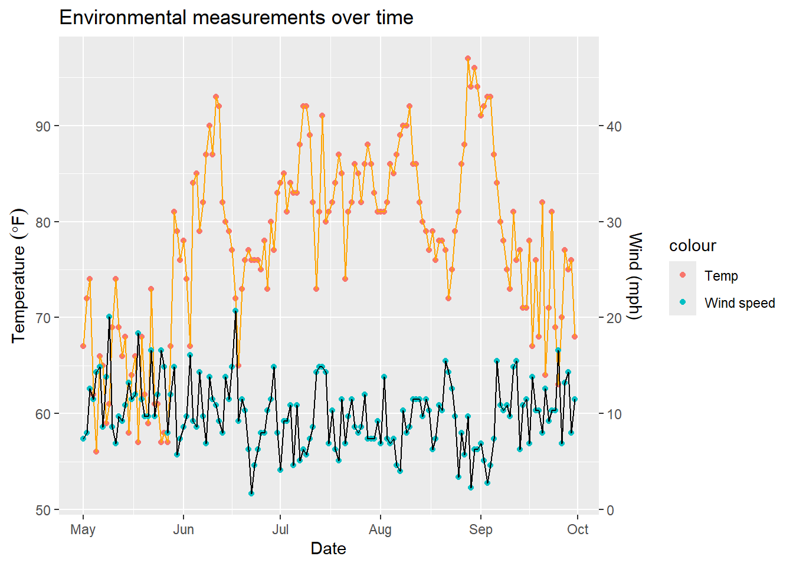
Figure 37: Scatter plots can also include multiple lines
There’s more to do and think about!
This just scratches the surface of potential ways to visualize data. For example, heatmaps can be used to show location specific data and we can build interactive or animated visualizations. However, the basic principles we’ve examined here should get you started.
The different approaches covered here also indicate there a lots way to display data! Whichever approach you use, you should ensure that you represent the data honestly and clearly. Sometimes that means you just display data (points)! You should also always consider possible ways the data/visualization could be misinterpreted and avoid them. Common mistakes include the decision about which baseline should be included. For example, should charts always include 0 on the y-axis? Not including 0 can may small differences appear large. However, including it can make important changes seem insignificant! Consider
small_difference <-data.frame(Treatment =c("a","b"), mean=c(37,40))library(ggpubr)bp <-ggplot(small_difference, aes(x=Treatment, y=mean, fill=Treatment))+geom_bar(stat="identity")sp <-ggplot(small_difference, aes(x=Treatment, y=mean, color=Treatment))+geom_point()compare <-ggarrange(bp, sp, labels =c("A", "B"),ncol =2, nrow =1,common.legend =TRUE, legend="bottom")annotate_figure(compare,top =text_grob("Including a zero point can make a big difference!", color ="red", face ="bold", size =14))
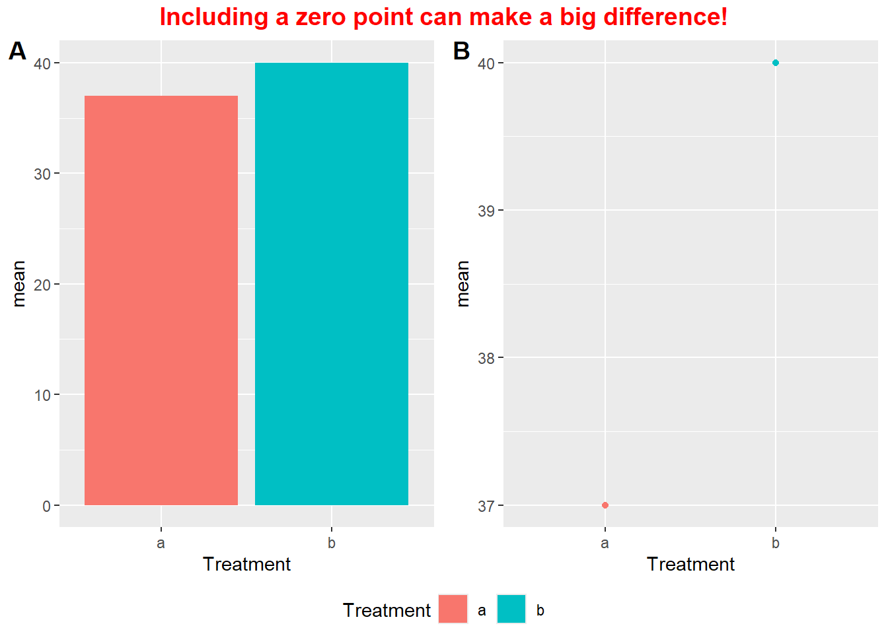
Figure 38: The decision of where to start the y-axis can have major impacts on interpretation
If this is changes in temperature, option B may be more useful (this could be a normal temperature (37 C) compared to a fever of 104 (40 C). However, if its a difference in a metabolic rate, it may have minor impacts (and thus we choose option A)!
`geom_smooth()` using method = 'loess' and formula = 'y ~ x'
`geom_smooth()` using method = 'loess' and formula = 'y ~ x'
annotate_figure(compare,top =text_grob("Same data, three visualizations", color ="red", face ="bold", size =14))
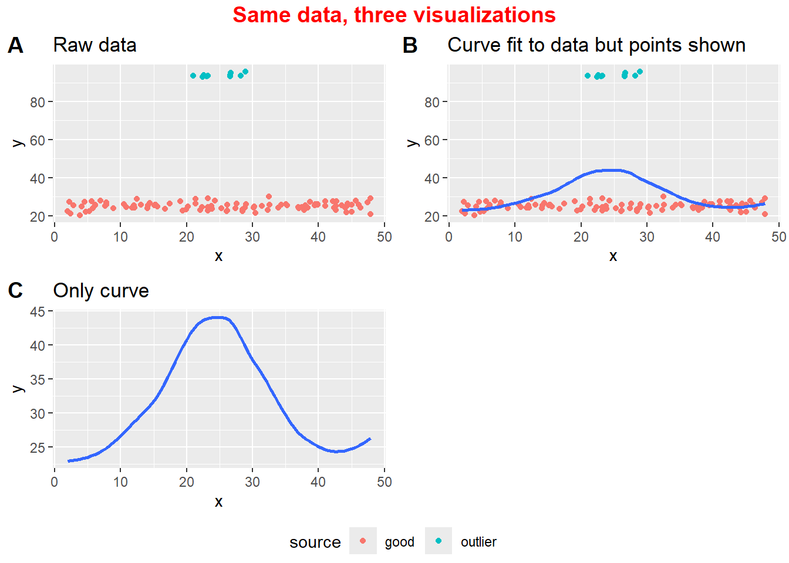
Figure 39: This would likely indicate
Whereas the raw data (panel A) may suggest some outliers that are concerning, by panel C we have “smoothed” the data and made an interesting pattern. In general, thought must be applied to individual situations regarding visualization style and nuance. Adding information on spread in the data will also help (coming up!).
Numerical Summaries
While visual summaries give us a clearer picture of the data, numerical summaries can help distill a large dataset into several components that can then be analyzed or compared. A key point is we are rarely trying to say if 2 groups are exactly the same or if a trait value is exactly equal to something. Given sampling error, we know its unlikely we would get exactly the same values, and, more importantly, its really rare for 2 groups to be exactly the same. Instead, we are often comparing characteristics of the population data among group or to set values.
Central tendency
One common characteristic of a population is central tendency. Central tendency considers what are common values in a dataset by focusing on the center of the distribution. Mean, or the average or \(\mu\) , is one measure of central tendency. Due to sampling error, we don’t know \(\mu\), but we can estimate it. In general, we use Greek letters to denote the population values and standard(Latin) letters typically denote our estimate (sometimes with added symbols). For example, if we have n data points, our estimate of the mean \(\mu\) is known as \(\overline{Y}\) (read as “y-bar”) is
where \(\sim\) means “approximately”. Other measures of central tendency include the mode (most common data point) or median (middle data point if all data were placed in ascending order (remember box plots!)).
Why do we need more than one measure of central tendency? Consider our cardinal data:
# function to calculate modefun.mode<-function(x){as.numeric(names(sort(-table(x)))[1])}ggplot(data.frame(cardinals), aes(x=cardinals)) +geom_histogram(color="black") +labs(title="Weight of Westchester cardinals",x="Weight (g)",y="Frequency")+geom_vline(aes(xintercept=mean(cardinals), color="mean"))+geom_vline(aes(xintercept=median(cardinals), color="median"))+geom_vline(aes(xintercept=fun.mode(cardinals), color ="mode")) +theme_bw()+theme(legend.position="bottom")+guides(color =guide_legend(title ="Measure"))
`stat_bin()` using `bins = 30`. Pick better value with `binwidth`.
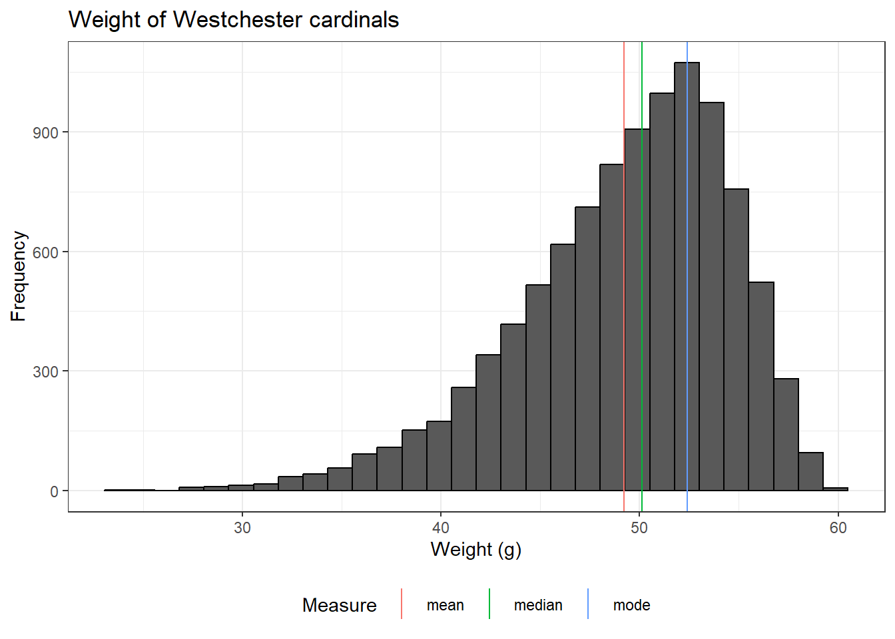
Figure 40: Skew impacts value of and relationships among various measures of central tendency
Note the data is left-skewed. so the mean is pulled towards these outliers. The median may offer a better summary of the actual center. We see similar outcomes with right-skewed data.
ggplot(data.frame(blue_jays), aes(x=blue_jays)) +geom_histogram(color="black") +labs(title="Weight of Westchester blue jays",x="Weight (g)",y="Frequency")+geom_vline(aes(xintercept=mean(blue_jays), color="mean"))+geom_vline(aes(xintercept=median(blue_jays), color="median"))+geom_vline(aes(xintercept=fun.mode(blue_jays), color ="mode")) +theme_bw()+theme(legend.position="bottom")+guides(color =guide_legend(title ="Measure"))
`stat_bin()` using `bins = 30`. Pick better value with `binwidth`.
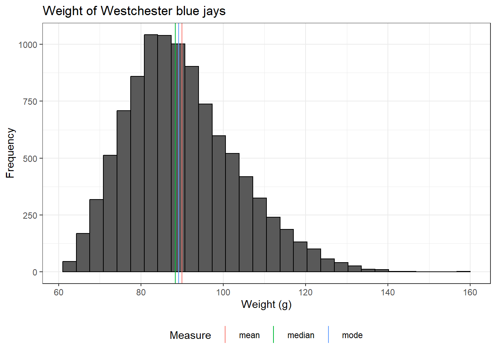
Figure 41: Skew impacts value of and relationships among various measures of central tendency
But with symmetric data, we see the measures of central tendency align more
ggplot(data.frame(parrots), aes(x=parrots)) +geom_histogram(color="black") +labs(title="Weight of Westchester parrots",x="Weight (g)",y="Frequency")+geom_vline(aes(xintercept=mean(parrots), color="mean"))+geom_vline(aes(xintercept=median(parrots), color="median"))+geom_vline(aes(xintercept=fun.mode(parrots), color ="mode")) +theme_bw()+theme(legend.position="bottom")+guides(color =guide_legend(title ="Measure"))
`stat_bin()` using `bins = 30`. Pick better value with `binwidth`.
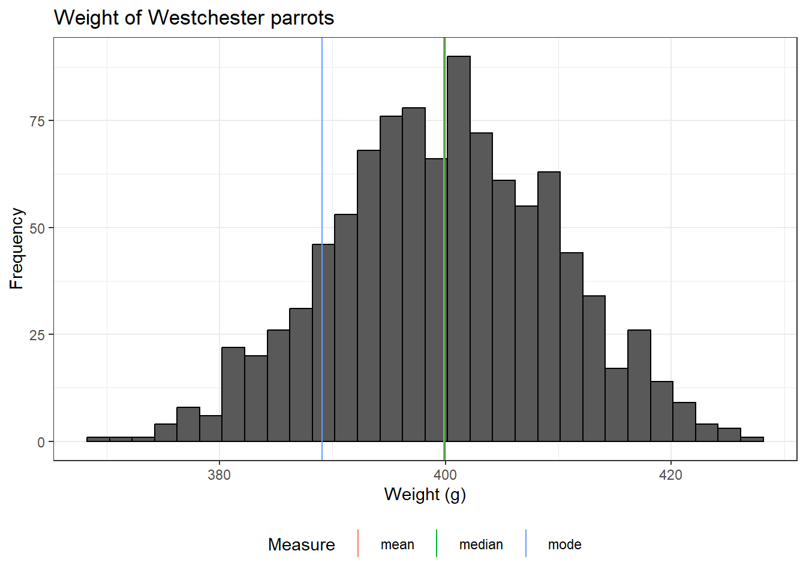
Figure 42: For symmetric data, measures of central tendency are more aligned.
Why is the mode not always on the highest bar?
Note the mode is heavily/totally impacted by data precision and thus can lead to unusual matches with histograms. In our above example, cardinals were measured to 10-3 grams. However, the data was binned to levels of 10-2 grams. Due to this mismatch, the most common measurement of the raw data was 52.401, which occurred 6 times. However, more data points still fell in another bin!
A special case where central tendency may not be the best way to describe a distribution is known as bimodal data. In this case, the distribution shows two, not one, clear peak. Remember the woodpecker Figure 12 data?
ggplot(data.frame(woodpeckers), aes(x=woodpeckers)) +geom_histogram(aes(y=..density..), color="black") +geom_density()+labs(title="Weight of Westchester woodpeckers",x="Weight (g)",y="Proportion")+theme_bw()+geom_vline(aes(xintercept=mean(woodpeckers), color="mean"))+geom_vline(aes(xintercept=median(woodpeckers), color="median"))+geom_vline(aes(xintercept=fun.mode(woodpeckers), color ="mode")) +theme_bw()+theme(legend.position="bottom")+guides(color =guide_legend(title ="Measure"))
`stat_bin()` using `bins = 30`. Pick better value with `binwidth`.
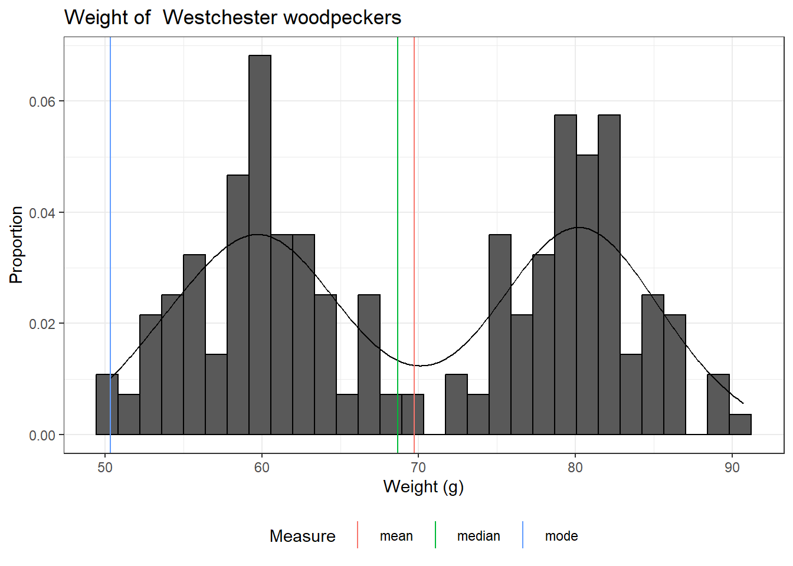
Figure 43: Example of bimodal data with various measures
Note the mode is (again) off, but the mean and median also represent uncommon individuals!
Spread
Along with the central tendency, another set of numerical summaries focus on the spread of the data. In some ways these focus on how much of the data is in the tail (or how heavy the tail is). To illustrate this, consider the Figure 5 data.
`stat_bin()` using `bins = 30`. Pick better value with `binwidth`.
Figure 44: Remember this example of approximately normal data?
We can instead plot the raw data
iris$sample <-1:nrow(iris)ggplot(iris[iris$Species =="virginica",],aes(y=Sepal.Length, x=sample))+geom_point() +labs(title=expression(paste("Sepal lengths of ",italic("I. virginica"), " arranged by collection order")),y="Sepal length (cm)",x="Collection #")
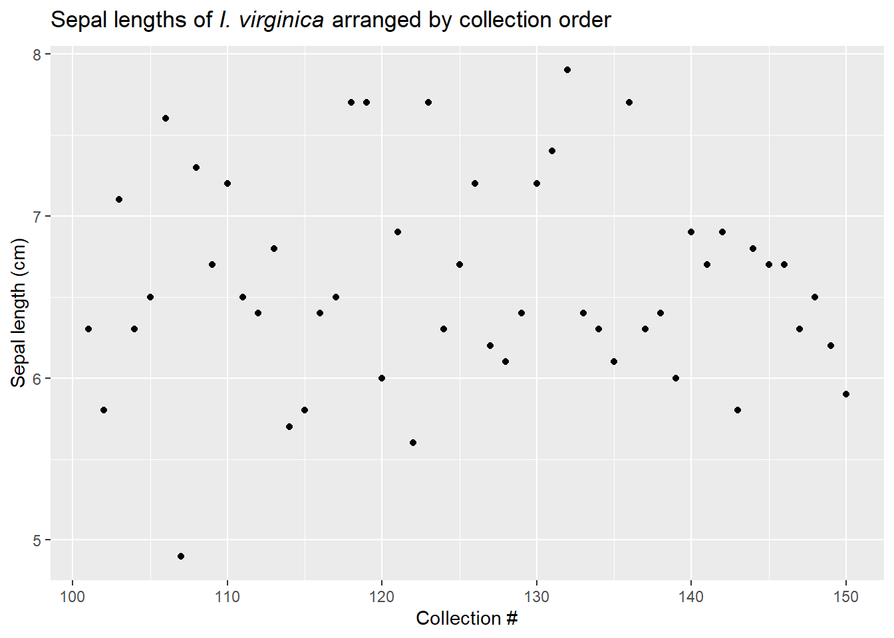
Figure 45: Note x-axis is just sample order!
Now let’s add the mean
ggplot(iris[iris$Species =="virginica",],aes(y=Sepal.Length, x=sample))+geom_point(color='blue') +labs(title=expression(paste("Sepal lengths of ",italic("I. virginica"), " arranged by collection order")),y="Sepal length (cm)",x="Collection #")+geom_hline(aes(yintercept=mean(iris[iris$Species =="virginica", "Sepal.Length"])), color ="blue")+annotate("text", label ="mean", x =135, y =mean(iris[iris$Species =="virginica", "Sepal.Length"])+.13, color ="blue")
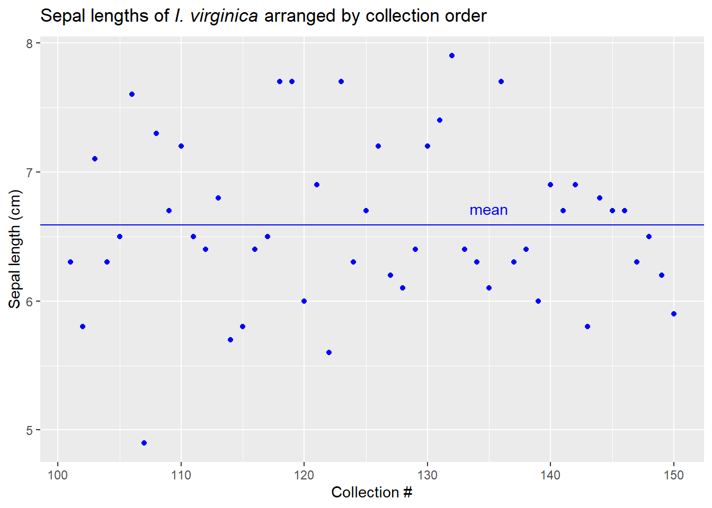
Figure 46: Mean shown in blue!
Note the points differ in how far they are from the mean! For example, we could find another species with a very similar mean but different spread of the data.
iris_new <-data.frame(Sepal.Length =runif(50,min=mean(iris[iris$Species =="virginica", "Sepal.Length"])-.25, max=mean(iris[iris$Species =="virginica", "Sepal.Length"])+.25), Species ="uniforma", sample=101:150)iris_hypothetical <-merge(iris, iris_new, all = T)ggplot(iris_hypothetical[iris_hypothetical$Species %in%c("virginica", "uniforma"),],aes(y=Sepal.Length, x=sample, color=Species))+geom_point() +labs(title=expression(paste("Sepal lengths of ",italic("I. virginica"), " and ", italic("uniforma "), "arranged by collection order")),y="Sepal length (cm)",x="Collection #")+geom_hline(aes(yintercept=mean(iris_hypothetical[iris_hypothetical$Species =="virginica", "Sepal.Length"])), color ="blue")+geom_hline(aes(yintercept=mean(iris_hypothetical[iris_hypothetical$Species =="uniforma", "Sepal.Length"])), color ="red")+annotate("text", label ="I. virginica mean", x =135, y =mean(iris_hypothetical[iris_hypothetical$Species =="virginica", "Sepal.Length"])+.13, color ="blue") +annotate("text", label ="I. uniforma mean", x =135, y =mean(iris_hypothetical[iris_hypothetical$Species =="virginica", "Sepal.Length"])-.13, color ="blue")+scale_color_manual(values=c("blue", "red"))
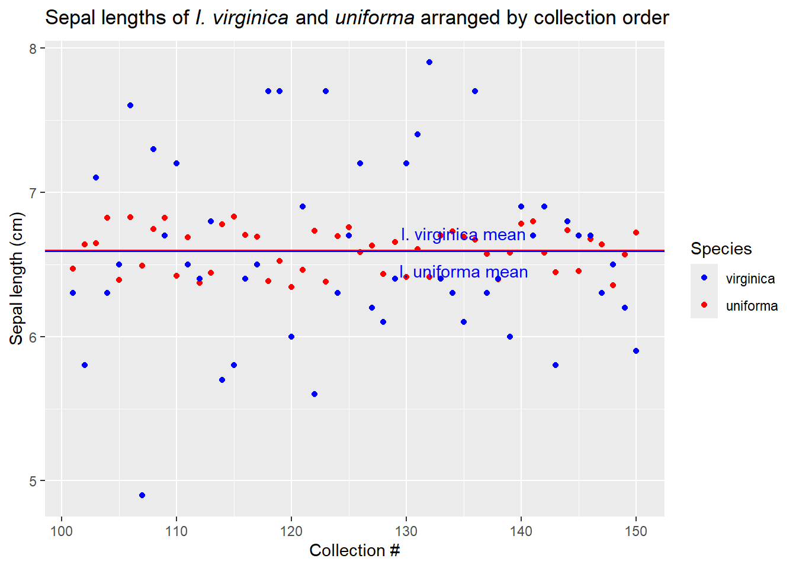
Figure 47: Similar mean, very different distribution!
This spread could be quantified in multiple ways. Here we focus on the variance, which is defined as
Again, the population parameter is \(\sigma^2\), and the estimate is \(s^2\). This is effectively the average distance of each point from the mean squared!
segment_data <-data.frame( x =101:150, xend =101:150, y=iris[iris$Species =="virginica", "Sepal.Length"], yend =mean(iris[iris$Species =="virginica", "Sepal.Length"]) )ggplot(iris[iris$Species =="virginica",],aes(y=Sepal.Length, x=sample))+geom_point(color='blue') +labs(title=expression(paste("Sepal lengths of ",italic("I. virginica"), " arranged by collection order")),y="Sepal length (cm)",x="Collection #")+geom_hline(aes(yintercept=mean(iris[iris$Species =="virginica", "Sepal.Length"])), color ="blue")+annotate("text", label ="mean", x =135, y =mean(iris[iris$Species =="virginica", "Sepal.Length"])+.13, color ="blue") +annotate("text", label ="square each red line \n and find average!", x =145, y =7.5 , color ="red") +geom_segment(data = segment_data, aes(x = x, y = y, xend = xend, yend = yend), color="red", size =1.1)
Warning: Using `size` aesthetic for lines was deprecated in ggplot2 3.4.0.
ℹ Please use `linewidth` instead.
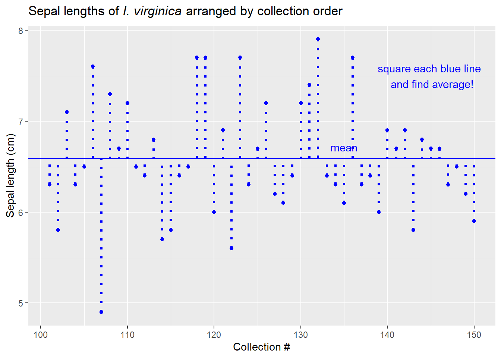
Figure 48: Mean shown in blue!
Why \(n-1\) on the bottom, you might ask? Related reasons focus on degrees of freedom (we’ll get there) and bias. Our estimate of \(s^2\) is based on our sample mean. Since the sample mean can, at best, be the population mean, our variance estimate may be biased (too small). Dividing by \(n-1\) can be shown to correcthat. Alternatively, we are estimating one parameter from our data (again, \(\mu\)), so we need to remove one degree of freedom from our calculation. However, some programs still \(n\) on the bottom. Note this will only really matter when \(n\) is small. In short, as another professor once told me, if the difference is based on whether you use \(n\) or \(n-1\) in your variance calculation, you likely have other problems.
Note variance has odd (squared) units. If we take the square root of the variance, we get a value called the standard deviation.
\[
standard\;deviation = sd= \sqrt{variance}
\]
This metric is now in the same units as the mean (\(\mu\)), so we can plot them easily on the same graph! This will become important later, especially when we discuss normal distributions.
Coefficient of variation
The coefficient of variation, \(CV\), is found using the formula
\[
CV = \frac{s}{Y} * 100\%
\]
This scales the variance (spread) of the data by the mean. The \(CV\) is unitless and can be used to compare various distributions.
Odds and Ends: Quartiles, percentiles, other splits, maximum and minimum
As noted above in the discussion of five-number summaries, we can also find the assorted quartiles, minimum, and maximum of a dataset. This can be especially helpful when the mean isn’t a useful measure of central tendency (since variance and \(CV\) rely on the estimate of the mean!). For examples, see ?@fig-cardinals_plot. The original five number summary is
summary(cardinals)
Min. 1st Qu. Median Mean 3rd Qu. Max.
23.33 46.12 50.11 49.22 53.19 59.50
Note that if we shifted the bottom 10% of the values even further left (increasing the skew), the median stays the same, as does the IQR.
`stat_bin()` using `bins = 30`. Pick better value with `binwidth`.
summary(cardinals_new)
Min. 1st Qu. Median Mean 3rd Qu. Max.
22.93 46.12 50.11 49.18 53.19 59.50
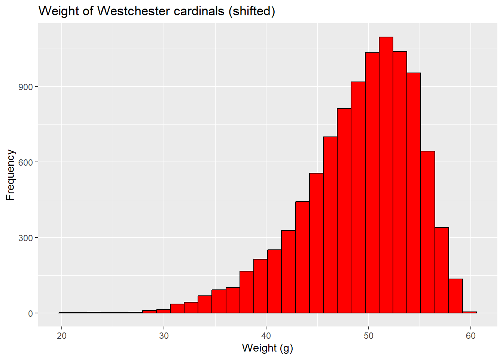
Figure 49: Shifted cardinal data
Proportions for categorical data
Finally, if we have categorical instead of numerical data, we can find the proportion of data in each category. We mentioned this approach when producing mosaic plots. To find a proportion, you count the number of samples that fall in a given group and divided that by the total number sampled. Alternatively, you can assign a score of 0 for values that are not in the focal group and a score of 1 to samples that are - the average of these scores will give you the proportion.
For example, earlier we plotted how flower color differed among species and location.


.png)

 {#fig-bar_charts_all species width=672}
{#fig-bar_charts_all species width=672} {#fig-stacked_histograms_all species width=672}
{#fig-stacked_histograms_all species width=672} {#fig-box_whisker_all species width=672}
{#fig-box_whisker_all species width=672} {#fig-point_all species width=672}
{#fig-point_all species width=672} {#fig-faceted_histograms_all species width=672}
{#fig-faceted_histograms_all species width=672}